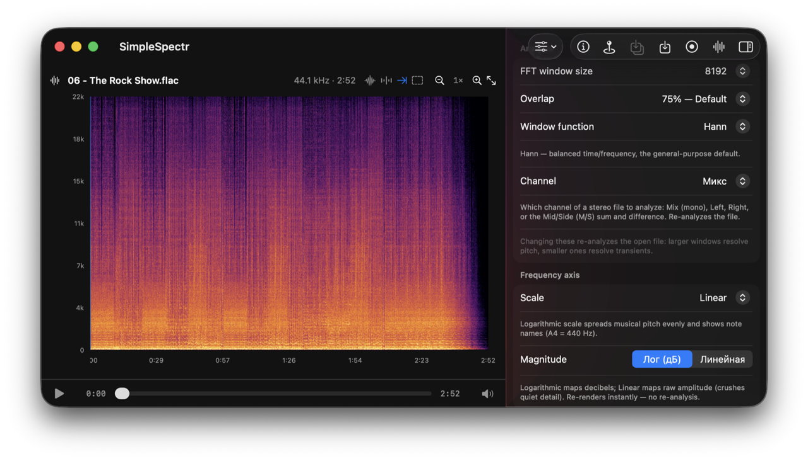
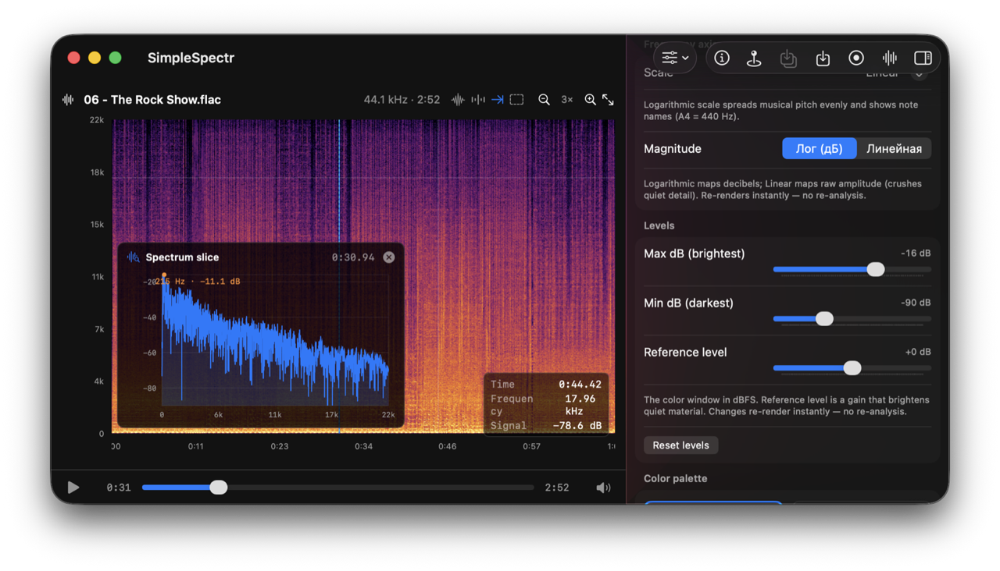

Audiospektrogramm für macOS
Eine kostenlose App zum Anzeigen, Messen und Exportieren von Audiospektrogrammen.


Alles, um ein Spektrogramm zu lesen
Werkzeuge auf Profi-Niveau — kostenlos, in einer nativen Mac-App.
Genaue FFT-Analyse
Short-Time Fourier Transform mit Amplitudennormierung, berechnet über Accelerate (vDSP) von Apple — Hover liefert echte dBFS-Werte. FFT-Größe (256 – 16384), Overlap (bis 87,5 %) und Fenster (Hann, Blackman-Harris, Kaiser, Flattop) sind frei wählbar.
5 Frequenzskalen
Linear, Logarithmisch (mit Notennamen, A4 = 440 Hz), Mel, Bark und ERB. Jede wahrnehmungsbasierte Skala verzerrt die Zeilen so, dass Beschriftung und Bild immer übereinstimmen.
Kanalmodi
Stereo analysieren als Mix (Mono-Downmix), Left, Right, Mid/Side (M/S) Summe/Differenz, als Stereo (L/R übereinander gestapelt) oder als Korrelation, die ein einziges Diagramm nach dem Verhältnis von L und R pro Frequenz einfärbt — rot gegenphasig, blau gleichphasig.
Live-Mikrofoneingang
Nehmen Sie das Mikrofon auf und beobachten Sie, wie sich ein bildschirmfüllendes Spektrogramm in Echtzeit aufbaut. Die erfasste FLAC wird über den vollständigen Analysepfad erneut geöffnet.
Messbereich
Rechteck ziehen für sofortiges Δ-Zeit, Δ-Frequenz, musikalisches Intervall und echte Amplitudenstatistiken: RMS, Sample-Peak dBFS, 4× überabgetasteter True Peak dBTP und BS.1770 LUFS.
Spektrum-Schnitt
Doppelklick auf einen beliebigen Zeitpunkt öffnet eine 1-D-Amplituden-gegen-Frequenz-Kurve dieser exakten STFT-Spalte — praktisch zum Ablesen von Peaks und Spektralform.
Harmonischer Cursor
Blasse Führungslinien der Obertonreihe (2×, 3×, 4×…) über der Frequenz unter dem Cursor einblenden, um tonalen Inhalt von Rauschen zu trennen.
Wellenform-Übersicht
Eine Amplituden-Spur im Zeitbereich über dem Spektrogramm, auf derselben Zeitachse und Zoom wie die Frequenzdarstellung.
Hover-Fadenkreuz
Cursor beliebig bewegen, um exakte Zeit, Frequenz und Signalpegel (dB) an diesem Punkt zu lesen — ohne Pixel erneut auszulesen.
Datenexport
Exportieren Sie die tatsächlichen STFT-Magnituden als CSV oder JSON, speichern Sie das Bild als PNG oder exportieren Sie Ihre Marker — mit Bereichs- und Formatoptionen.
3D-Überflug- & 2D-Balken-Video
Rendern Sie das Spektrogramm als teilbare .mp4 in zwei Stilen: als zur Musik synchrone 3D-Landschaft oder als klassische 2D-Balken — segmentierte Balken über einer leuchtenden Grundlinie mit Spiegelung. Wählen Sie 16:9, 9:16 oder 1:1, bis 4K, justieren Sie Kamera oder Balken und legen Sie eigene Hintergrund- und Balkenfarben fest. Für Reels, TikTok, Shorts und YouTube.
▶ 3D-Beispiel ▶ 2D-Beispiel9 wahrnehmungsbasierte Colormaps
Inferno, Viridis, Magma, Plasma, Turbo, Cividis, Jet, Hot und Grayscale — im Oklab-Raum interpoliert, mit Live-Vorschau und einstellbarem dB-Fenster. Der Korrelationsmodus nutzt eine eigene divergierende Rot↔Blau-Karte.
Pegel & Magnitude
Setze das Farbfenster in dBFS — Minimum, Maximum und einen Referenzpegel, der leises Material anhebt — und bilde die Werte als log-dB oder lineare Amplitude ab. Alles rendert sofort aus dem gecachten Raster, ohne neue Analyse.
Datei-Infos auf einen Blick
Ein Klick zeigt Container, Codec, verlustfreie oder verlustbehaftete Kompression, PCM-Sampleformat, Samplerate und Nyquist, Kanäle, Bittiefe, Bitrate, Frames pro Paket, Dauer, Gesamt-Frames und Dateigröße.
Wiedergabe & Synchronisierung
Ein unterer Player spielt die Datei, ein synchronisierter Cursor wandert über das Spektrogramm, Klicken und Ziehen sucht, und die Ansicht scrollt automatisch mit.
Marker & Zoom
Beschriftete Marker auf der Zeitleiste setzen, den Plot horizontal per Zeit-Zoom dehnen und zuletzt geöffnete Dateien über Neustarts hinweg öffnen.
Speicherschonend
Audio wird gestreamt decodiert und analysiert, nie vollständig gehalten — sodass selbst sehr lange Dateien ohne Speichermangel gerendert werden.
14 Sprachen
Englisch, Russisch, Deutsch, Spanisch, Französisch, Italienisch, Japanisch, Koreanisch, Chinesisch (vereinfacht), Portugiesisch (Brasilien), Hindi, Arabisch, Bengali und Türkisch.
How it works
Audio is decoded with Core Audio and streamed through the analyzer, so long files never sit fully in memory. The channel you picked (mix, left, right, mid/side — or both channels at once for the stereo and correlation modes) is transformed via a short-time Fourier transform (your chosen window + real FFT) using Accelerate's vDSP. The one-sided spectrum is amplitude-normalized and window-corrected, magnitudes are converted to dB, and mapped through a perceptual colormap into a crisp image — low frequencies at the bottom, high at the top, time advancing left to right. The dB grid is cached, so switching palette, scale or dB window re-renders instantly without touching the audio again.